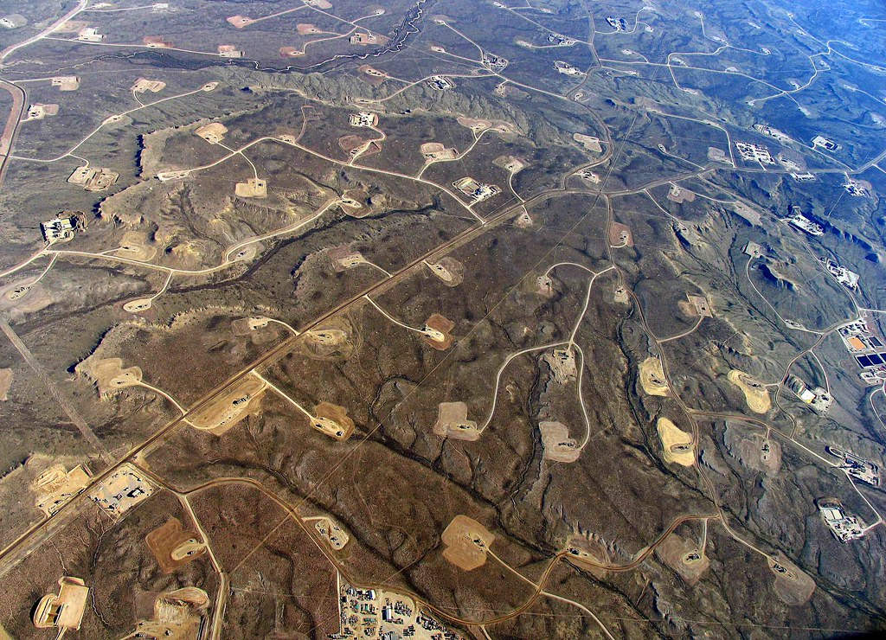

Fracking, the process of cracking fissures deep underground to extract oil, has had an overwhelming presence on American soil, especially in Colorado. Fracking is so commonplace in Colorado that most neighborhoods have a drilling site just on the outskirts of their homes.

Here is a map detailing the presence of Fracking sites in Colorado
Now why is this a problem?
Water Contamination

In order to physically break open the underground oil sites, chemicals are combined with water and liquid and are sent through high-pressure tubes. These chemicals seep into water reservoirs, as well as possible contamination from the oil that is extracted from these rocks. The combination of the presence of these chemicals and the oil will end up polluting water reservoirs and wells that communities use every day. Contaminated water has been proven to be linked with serious health effects, including low birth weight, higher rates of cancer, and others.
In order to physically break open the underground oil sites, chemicals are combined with water and liquid and are sent through high-pressure tubes. These chemicals seep into water reservoirs, as well as possible contamination from the oil that is extracted from these rocks. The combination of the presence of these chemicals and the oil will end up polluting water reservoirs and wells that communities use every day. Contaminated water has been proven to be linked with serious health effects, including low birth weight, higher rates of cancer, and others.
Air Pollution
The chemicals that contaminate the water sources will also pollute the air. Cameras that showcase B02 reveal shocking data on how the areas around these sites are affected. With many of these sites being close to schools and neighborhoods, people will be forced to live with contaminated air.
The chemicals that contaminate the water sources will also pollute the air. Cameras that showcase B02 reveal shocking data on how the areas around these sites are affected. With many of these sites being close to schools and neighborhoods, people will be forced to live with contaminated air.
Fracking Site Problems
Fracking sites require immense amounts of water in order to function properly It was shown that fracking sites doubled their freshwater usage during the drought last year. There have also been numerous sites that have exploded, causing lethal damage to workers.
Fracking sites require immense amounts of water in order to function properly It was shown that fracking sites doubled their freshwater usage during the drought last year. There have also been numerous sites that have exploded, causing lethal damage to workers.
What is the solution?
Numerous non-profit groups have been pushing for anti-fracking legislation within Colorado State. Some of these groups include:
- Colorado Rising
- 350 Colorado
- Colorado People's Alliance
These groups were able to get Proposition 112 to the ballot in 2018. It was due to the incredible efforts of these groups that even got the issue onto the ballots but faced heavy opposition throughout their entire process. Learn more about what these climate activists face when dealing with the oil industry and the local government, as well as the new goals for the future on the following pages.